UDN
Search public documentation:
LightingReferenceKR
English Translation
日本語訳
Interested in the Unreal Engine?
Visit the Unreal Technology site.
Looking for jobs and company info?
Check out the Epic games site.
Questions about support via UDN?
Contact the UDN Staff
日本語訳
Interested in the Unreal Engine?
Visit the Unreal Technology site.
Looking for jobs and company info?
Check out the Epic games site.
Questions about support via UDN?
Contact the UDN Staff
조명의 참조
문서 요약: LightColor와 Lighting 속성에 대한 포괄적인 침조. 문서 변경 내역: 최종 업데이트 Michiel Hendriks - v3323를 위한 약간의 업데이트. bDirectionalCorona를 추가함. 이전 업데이트 Jason Lentz (DemiurgeStudios?)-좀 더 다루기 쉬운 문서들로 분리함. 원저자 - Lode Vandevenne (UdnStaff)서론
이 문서에는 LightColor 및 Lighting 두 섹션에 대한 모든 조명 속성들의 완벽한 목록이 수록되어 있습니다. 이 속성들은 LightActor에서 뿐만이 아니라, 모든 액터에서 사용할 수 있습니다. 일부 속성들에 대해서는 표 다음에 더 깊이 있게 설명했습니다 .LightColor
LightColor를 사용하면 조명의 밝기와 색상을 변경할 수 있습니다. 색상은 조명의 속성에서 light --> LightColor로 설정합니다. 다음은 LightActor에 대한 3가지 속성에 대한 설명 및 그 기본 설정입니다.
다음은 LightActor에 대한 3가지 속성에 대한 설명 및 그 기본 설정입니다.
| 속성 | 설명 | 기본값 |
|---|---|---|
| LightBrightness | 조명의 양을 제어합니다. 자세한 설명은 아래를 참고하십시오. | 64.0 |
| LightHue | 조명의 색조및 색상을 제어합니다. 자세한 설명은 아래 를 참고하십시오. | 0 |
| LightSaturation | 조명의 채도 레벨이나 “순도” 를 제어합니다. 자세한 설명은 아래 를 참고하십시오. | 255 |
Light Brightness (조명의 밝기)
조명을 더 밝게 또는 덜 밝게 할 때 LightBrightness를 사용합니다: 이 값을 255 이상으로 하는 것이 가능하기는 하지만, 폴 오프가 유난히 예리해질 수 있기 때문에 이상한 결과를 얻을 수 있습니다. 그리고 이 값을 0으로 설정하면, 당연히 조명이 전혀 없게 됩니다. 아래의 스크린샷은 LightBrightness 값이 64, 128 그리고 255로 설정된 결과를 차례로 보여줍니다: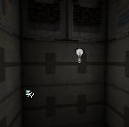

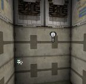
Light Hue(조명의 색조)
LightHue는 조명의 실제 색상을 변경할 때 사용합니다. 예를 들어 LightHue가 0이면 빨강, 40은 노랑, 80은 초록, 160은 파랑, 200은 보라색 그리고 255는 다시 빨강이 됩니다. 물론 여러분은 LightSaturation이 255보다 낮을 때만 그 차이를 확인할 수 있습니다. 아래의 스크린샷에서는 LightSaturation이 128,그리고 LightHue는 차례로 0, 64, 128 및 192로 설정되어 있습니다.

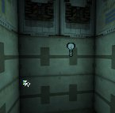

Light Saturation(조명의 채도)
LightSaturation는 색의 농도를 변경할 때 사용합니다. 이것이 기본 값인 255일 경우 조명은 흰색이 됩니다. 그러나 이 값을 낮추면 LightHue에서 정의한 색상을 가지게 됩니다. 이 값이 낮을수록 색의 농도가 강해집니다. 아래의 스크린샷은 LightSaturation이 차례로 255, 192, 128 그리고 0으로 설정된 결과입니다: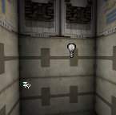

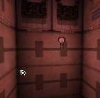
 조명을 선택하지 않은 경우에는, 전구 그림이 그것이 방사하는 빛과 같은 색을 가지게 되는 것을 확인할 수 있습니다. 그러나 조명을 선택하면 "Show Selection Highlight" 옵션을 비활성화시키지 않는 한 전구 그림은 항상 초록색으로 보입니다. 뷰에서 이 옵션을 토글하려면 뷰를 선택한 다음 S 키를 누르십시오.
조명을 선택하지 않은 경우에는, 전구 그림이 그것이 방사하는 빛과 같은 색을 가지게 되는 것을 확인할 수 있습니다. 그러나 조명을 선택하면 "Show Selection Highlight" 옵션을 비활성화시키지 않는 한 전구 그림은 항상 초록색으로 보입니다. 뷰에서 이 옵션을 토글하려면 뷰를 선택한 다음 S 키를 누르십시오.
 조명의 색상을 좀 더 쉽게 선택하는 방법이 있습니다. "Color" 버튼을 누르면, 윈도우스의 Color 대화상자가 나타납니다; 여기서 색상을 선택하고 OK를 누르면 됩니다.
조명의 색상을 좀 더 쉽게 선택하는 방법이 있습니다. "Color" 버튼을 누르면, 윈도우스의 Color 대화상자가 나타납니다; 여기서 색상을 선택하고 OK를 누르면 됩니다.

 Pick 버튼을 누르면 마우스 커서가 점적기 모양으로 변하여, 뷰에서 원하는 색상을 고를 수 있습니다.
Pick 버튼을 누르면 마우스 커서가 점적기 모양으로 변하여, 뷰에서 원하는 색상을 고를 수 있습니다.
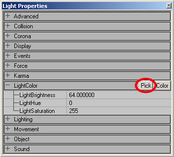
 조명이 충분히 밝지 않다고 생각되면 같은 지점에 완전 밝기의 조명을 여러 개 추가하십시오. 충분한 조명의 결합은 검정색의 텍스처를 거의 흰색으로 만들 수 있습니다.
조명이 충분히 밝지 않다고 생각되면 같은 지점에 완전 밝기의 조명을 여러 개 추가하십시오. 충분한 조명의 결합은 검정색의 텍스처를 거의 흰색으로 만들 수 있습니다.
Lighting
이 속성에는 한층 더 많은 변수들이 있습니다. 다음은 LightActor를 위한 기본 설정과 함께 이 변수들을 각각 설명하는 표입니다.
| 변수 | 설명 | 기본 값 |
|---|---|---|
| bActorShadows | `True’일 경우 액터가 그림자를드리웁니다. | False |
| bCorona | 조명이 Skins 를 코로나로서 사용하게 됩니다. 이에 대한 전체적인 설명은 특별 조명 기능 문서를 참고하십시오. | False |
| bDirectionalCorona | 코로나가 모든 방향이 아니라 설정된 방향에서만 효과를 나타내게 됩니다. | False |
| bDynamicLight | `True’일 경우, 이 빛으로부터의 조명이 빛과 함께 이동할 수 있도록 합니다. DynamicLight 은 보통의 빛보다다소 더 프로세서 집약적이라는 점을 유의하십시오. | False |
| bLightingVisibility | 라인 점검과 함께 이 액터에 대한 조명의 가시성을 계산합니다. | True |
| bSpecialLit | 이 빛에 의해 영향을 받는것과 받지 않는 것들에 대해 어느 정도의 수동 콘트롤을 허용합니다. 자세한 설명은 아래를 참고하십시오. | False |
| LightCone | 조명 효과 LE SpotLight 를 사용하는 경우, 이것이 스포트라이트 원뿔의 각도를 결정합니다. 자세한 설명은 아래 를 참고하십시오. | 128 |
| LightEffect | 여러분의 조명에 사용할 수 있는 기성품 효과입니다. 자세한 설명은 아래를 참고하십시오. | LE None |
| LightPeriod | 특별 조명 타입의 비율을 결정합니다. 자세한 설명은 아래를 참고하십시오. | 32 |
| LightPhase | 조명 타입과 조명 효과의 페이드 아웃 및 페이드인을 결정합니다. 자세한 설명은 아래를 참고하십시오. | 0 |
| LightRadius | 실제 조명 반경의 승수입니다. 자세한 설명은 아래를 참고하십시오. | 64.0 |
| LightType | 조명의 “안정성”을 결정합니다. 자세한 설명은 아래를 참고하십시오. | LT Steady |
Special Lit (특별 조명)
Light Properties의 Lighting에서, bSpecialLit을 True로 설정합니다. BSP 표면의 속성에서도Special Lit을 설정할 수 있습니다: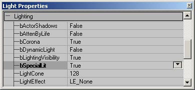
 Special Lit을 가진 표면은 bSpecialLit = True인 빛으로부터만 조명을 받을 수 있으며, bSpecialLit = False인 빛으로부터는 받을 수 없습니다. Special Lit이 없는 표면은 bSpecialLit = False인 빛으로부터만 조명을 받을 수 있으며 bSpecialLit = True인 빛으로부터는 받을 수 없습니다.
한 예로, 다음은 초록색과 빨강색 조명이 있는 보통의 작은 방입니다. 여기에는 Special Lit을 가진 벽이나 조명이 없습니다:
Special Lit을 가진 표면은 bSpecialLit = True인 빛으로부터만 조명을 받을 수 있으며, bSpecialLit = False인 빛으로부터는 받을 수 없습니다. Special Lit이 없는 표면은 bSpecialLit = False인 빛으로부터만 조명을 받을 수 있으며 bSpecialLit = True인 빛으로부터는 받을 수 없습니다.
한 예로, 다음은 초록색과 빨강색 조명이 있는 보통의 작은 방입니다. 여기에는 Special Lit을 가진 벽이나 조명이 없습니다:
 이제 한 벽을 Special Lit으로 설정하면, 그 벽은 검정색이 됩니다. 이 방에는 bSpecialLit인 조명이 없기 때문입니다:
이제 한 벽을 Special Lit으로 설정하면, 그 벽은 검정색이 됩니다. 이 방에는 bSpecialLit인 조명이 없기 때문입니다:
 이제 빨강색 조명에 대해 bSpecialLit을 True로 설정하면 (초록색 조명에 대해서는 이것을 여전히 False로 남겨둡니다), 다른 보통 벽들은 초록색이 되고 Special Lit인 벽은 빨강색이 됩니다:
이제 빨강색 조명에 대해 bSpecialLit을 True로 설정하면 (초록색 조명에 대해서는 이것을 여전히 False로 남겨둡니다), 다른 보통 벽들은 초록색이 되고 Special Lit인 벽은 빨강색이 됩니다:
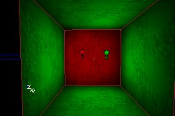
Ambient Lighting(주변 조명)은 보통의 벽과 Special Lit 벽을 모두 밝힙니다. 그러므로 주변 조명이 있는 경우에는 bSpecialLit = True인 조명이 없더라도 Special Lit 벽이 검정색으로 되지 않고 주변 조명의 색을 가지게 됩니다. 아래의 스크린샷에서는 주변 조명이 푸르스름한 색입니다: 주: 조명을 재빌드한 후에만 효과를 설정할 수 있으며, 조명을 편집하면 다음 재빌드때까지 모든 표면을 다시 조명하게 됩니다.
주: 조명을 재빌드한 후에만 효과를 설정할 수 있으며, 조명을 편집하면 다음 재빌드때까지 모든 표면을 다시 조명하게 됩니다.
LightCone
LightCone 설정을 사용하면, LightEffect 인 LE_SpotLight에 의해 만들어진 원뿔의 크기를 변경할 수 있습니다. 이 값이 클수록 광선이 커집니다. 물론 조명으로부터 표면까지의 거리도 최종 사이즈를 결정하는 요인이 됩니다. LightCone은 LightRadius와 다른 것이라는 점을 명심하십시오. LightRadius가 스포트라이트 광선의 길이를 결정하는 한편, LightCone은 원뿔의 각도를 결정합니다.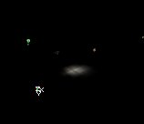


LightEffect
LightEffect는 디스코 조명, 원통형 조명, 태양광 같은 특별한 시각적 효과입니다. LightEffect는 Lighting --> LightEffect에 있습니다. 주: 현재 이 효과들은 제대로 기능을 발휘하지 않습니다. 아래의 경고들을 읽어 보십시오.- LightEffect가 StaticMesh에서 작용하기는 하지만, 오직 정점 단위로만 작용합니다. 이는 BSP 도형에서 LightEffect에 열등하고 명암이 심한 결과를 낳습니다.
- 현재 애니메이트된 LightEffect가 애니메이트하지 않고 있습니다. LightEffect를 선택한 후 이것이 애니메이트 하는 듯 하지만, 재빌드하거나 게임을 실행하자마자 효과의 애니메이트가 중지됩니다.
- 다음의 LightEffect들은 폐기되었으며, 따라서 이 문서에서 설명하지 않을 것입니다:
- CloudCast
- TorchWaver
- FireWaver
- WateryShimery
- Projectors(투영기) 를 사용하면 훨씬 나은 조명 효과를 만들어낼 수 있습니다 (참고: ProjectorsTableOfContents).
 다음은 페기되지 않은 LightEffect들에 대한 설명입니다:
LE_None: 기본 LightEffect이며, 조명을 한결같게 만듭니다. 이것을 LightType의 LT_None과 혼동하지 마십시오: LT_None이 조명이 꺼진 것을 뜻하는 반면, LE_None은 조명이 켜지도록 합니다.
다음은 페기되지 않은 LightEffect들에 대한 설명입니다:
LE_None: 기본 LightEffect이며, 조명을 한결같게 만듭니다. 이것을 LightType의 LT_None과 혼동하지 마십시오: LT_None이 조명이 꺼진 것을 뜻하는 반면, LE_None은 조명이 켜지도록 합니다.
 LE_SearchLight: 회전하는 빛의 광선을 만듭니다. LightPeriod 슬라이더를 사용하여 회전 속도를 조절할 수 있습니다.
LE_SearchLight: 회전하는 빛의 광선을 만듭니다. LightPeriod 슬라이더를 사용하여 회전 속도를 조절할 수 있습니다.
 LE_SlowWave: 애니메이트된 물결 효과를 만듭니다.
LE_SlowWave: 애니메이트된 물결 효과를 만듭니다.
 LE_FastWave: 또 하나의 애니메이트된 물결 효과입니다.
LE_FastWave: 또 하나의 애니메이트된 물결 효과입니다.
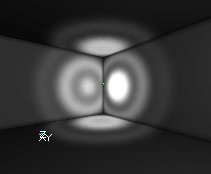
LE_StaticSpot 과 LE_SpotLight: 조명을 점으로 바꿉니다. LightCone을 사용하여 이것의 원뿔을 변경할 수 있으며, rotation 설정을 사용하여 방향을 바꿀 수 있습니다. LightCone 및 스포트 라이트의 방향에 더 자세히 설명되어 있습니다. LE_Shock: LE_FastWave와 다소 비슷하지만, 물결의 폭이 훨씬 넓습니다.
LE_Shock: LE_FastWave와 다소 비슷하지만, 물결의 폭이 훨씬 넓습니다.
 LE_Disco: 애니메이트된 디스코 조명 효과입니다.
LE_Disco: 애니메이트된 디스코 조명 효과입니다.
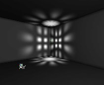
LE_Warp: LE_None과 같은 효과입니다 LE_NonIncidence 와 LE_QuadraticNonIncidence: 이것들은 LE_None과 같지만 구체의 가장자리에서 희미해지는 것이 거의 없습니다. 따라서 중심으로 향할 수록 조명이 더욱 밝아지며 LightRadius에 가까와짐에 따라 더 빠르게 희미해집니다. 둘 중에서 QuadraticNonIncidence이 더 강렬합니다. LE_Shell: 둥근 조명의 겉껍질 부분만을 밝게 합니다. 벽들이 그 둥근 껍질의 내부에 있을 때만 이 효과를 확인할 수 있습니다. LightRadius가 구체의 반경을 결정합니다.
LE_Shell: 둥근 조명의 겉껍질 부분만을 밝게 합니다. 벽들이 그 둥근 껍질의 내부에 있을 때만 이 효과를 확인할 수 있습니다. LightRadius가 구체의 반경을 결정합니다.
 LE_OmniBumpMap: LE_None과 같습니다.
LE_Interference: 또 다른 애니메이트된 물결 효과입니다.
LE_OmniBumpMap: LE_None과 같습니다.
LE_Interference: 또 다른 애니메이트된 물결 효과입니다.
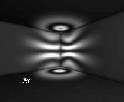
LE_Cylinder: 빛살이 구체 대신 실린더 모양을 형성하도록 합니다. 이것은 고정된 실린더로서, 회전할 수 없으며 높이 및 반경을 독자적으로 변경할 수 없습니다: 이 두가지는 LightRadius에 의해 결정됩니다. LE_Cylinder는 모든 것 가운데 가장 큰 조명 반경, 심지어 LE_NonIncidence보다 더 큰 반경이라는 인상을 만들어 냅니다. 이 스크린샷을 LE_NonIncidence의 스크린샷과 비교해 보십시오. 두 번째 스크린샷은 원통 모양의 조명을 나타냅니다. LE_Rotor: 한 묶음의 광선이 회전하는 것입니다.
LE_Rotor: 한 묶음의 광선이 회전하는 것입니다.
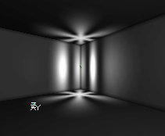
LE_Sunlight: 이것은 무한히 먼 곳에서 오는 빛을 모방합니다. 더 자세한 것은 태양광 섹션에서 설명합니다.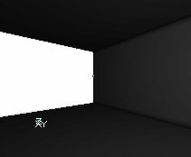
LightEffect는 LightType과 결합하여 사용될 수 있습니다. 예를 들면 LT_TexturePaletteLoop과 결합된 LE_Disco는 색깔이 변화하는 디스코 조명을 만들어 냅니다. 또 LT_Pulse와 결합된 LE_SpotLight은 고동치는 스포트 라이트를 만들어 냅니다.LightPeriod
LightTypes의 LT_Pulse와 LT_SubtlePulse, LT_TexturePaletteLoop 그리고 LightEffect의 LE_SearchLight의 속도를 변경할 때 이 변수를 사용하십시오. 이 수치가 낮을수록 애니메이션이 더 빠르게 실행됩니다. LE_SearchLight의 경우, LightPeriod가 1일 때 애니메이션 속도가 가장 빠릅니다. 이 값이 0일 때는, 전혀 움직이지 않습니다. Pulse와 SubtlePulse의 경우에는, 0일 때 가장 빠릅니다. LightPeriod는 다른 LightEffect 및 LightType들에 대해서는 작용하지 않습니다. 심지어 LT_Strobe에 대해서도 작용하지 않습니다.LightPhase
조명이 시작할 애니메이션 사이클의 단계를 설정할 때 사용합니다. LightPhase는 LightPeriod와도 작용하는 LightEffect 및 LightType에 대해서만 작용합니다. 예: 두 개의 고동치는 조명 (LT_Pulse)이 있는데 두 번째 것이 페이드 아웃 하는 동안 첫 번째 것이 페이드 인 하도록 하고 싶을 경우, 이 슬라이더를 사용해야 합니다. 아래의 스크린샷에는 LightType이 LT_Pulse인 두 개의 조명이 있습니다. 첫 번째 것의 LightPhase는 0, 두 번째 것의 LightPhase는 128입니다. 애니메이션 사이클은 255단계를 필요로 하므로, 128은 정확하게 애니메이션의 한가운데 입니다. 이것은 첫 번째 조명이 애니메이션의 시작단계에 있는 동안 (= 페이드 아웃), 두 번째 것은 벌써 애니메이션의 한가운데에 (= 페이드 인)있다는 것을 의미합니다.

LightRadius
LightRadius를 사용하면, 조명이 얼마나 멀리 비추는지를 조정할 수 있습니다. 그렇지만 속성의 값은 조명의 실제 반경에 직접 부합하는 것이 아니라 단지 실제의 조명 반경을 결정하는 사실상의 함수에 대한 승수일 뿐이라는 것을 알아두십시오. 0의값은 조명이 전혀 없다는 것을 뜻하며, 이 값을 높게 설정할수록 조명 구체의 반경이 커집니다. 그 예로, 아래 스크린샷에서 첫 번재 조명은 LightRadius가 16이고, 두 번째 것의 LightRadius는 32입니다.

LightType
LightType은 시간 경과에 따라 조명의 밝기를 변경합니다. 예를 들면 깜박이거나 번쩍거리게 만듭니다. LightType을 변경하려면 Light Properties --> Lighting --> LightType을 선택합니다. 그 다음 이곳의 목록에서 원하는 LightType을 고릅니다. LightType은 조명이 동적일 경우에만 작용합니다. bDynamicLight를 True로 설정해야 합니다. 대부분의 LightType들이 애니메이트 되어 있기 때문에 저는 스크린샷에 애니메이트된 gif을 사용했습니다.
LT_None: 이것을 선택하면 빛은 전혀 조명을 주지 않고, 그저 꺼진 채로 있습니다.
대부분의 LightType들이 애니메이트 되어 있기 때문에 저는 스크린샷에 애니메이트된 gif을 사용했습니다.
LT_None: 이것을 선택하면 빛은 전혀 조명을 주지 않고, 그저 꺼진 채로 있습니다.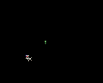
LT_Steady: 이것은 기본 값으로서, 조명이 항상 켜져있도록 합니다. LT_Pulse: 조명이 계속해서 흐려졌다 밝아졌다 하도록 합니다. "LightPeriod"를 사용하면 이 효과의 속도를 바꿀 수 있습니다: LightPeriod가 0이면 가장 빠른 속도로 이 효과가 진행되며, 255이면 가장 느린 속도로 진행됩니다 .
LT_Pulse: 조명이 계속해서 흐려졌다 밝아졌다 하도록 합니다. "LightPeriod"를 사용하면 이 효과의 속도를 바꿀 수 있습니다: LightPeriod가 0이면 가장 빠른 속도로 이 효과가 진행되며, 255이면 가장 느린 속도로 진행됩니다 .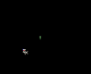
LT_Blink: 조명이 임의로 켜졌다 꺼졌다 하도록 하는데, 켜지는 경우가 더 잦습니다. 때로는 이것이 가만히 있는 것처럼 보이지만 LightPeriod 슬라이더를 올리면 효과가 다시 작용합니다. LightPeriod 슬라이더는 이 효과에 아무런 다른 영향을 주지 않습니다.LT_Flicker: 조명이 임의로 켜졌다 꺼졌다 하도록 하는데, 꺼지는 경우가 더 자주 있습니다.
 LT_Strobe: 이것은 조명이 계속 켜졌다 꺼졌다 하도록하는데, 가능한 한 빠른 속도로 진행합니다. 이 효과의 속도는 제어할 수 없으며, LightPeriod가 전혀 영향을 미치지 않습니다.
LT_Strobe: 이것은 조명이 계속 켜졌다 꺼졌다 하도록하는데, 가능한 한 빠른 속도로 진행합니다. 이 효과의 속도는 제어할 수 없으며, LightPeriod가 전혀 영향을 미치지 않습니다. LT_BackdropLight: LT_None과 똑같이 보입니다
LT_BackdropLight: LT_None과 똑같이 보입니다LT_SubtlePulse: pulse와 같은 작용을 하지만 보다 더 정교합니다.
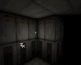
LT_TexturePaletteLoop와 LT_TexturePaletteOnce: 조명이 여러가지 다른 색깔을 루프하도록 하기 위해 사용합니다. TexturePaletteLoop와 TexturePaletteOnce 섹션에 더 자세히 설명되어 있습니다.LT_FadeOut: LT_None과 똑같이 보입니다
Unlit
BSP의 조명에 영향을 주는 또 하나의 설정인 Unlit은 Light Properties에 있지 않고 Surface Properties 안에 감추어져 있습니다. 이곳에서 BSP 표면에 대한 Unlit을 설정할 수 있습니다. 표면에 Unlit 이 유효화되면, 그 표면은 언제나 완전한 밝기이며 모든 조명 및 주변 조명을 무시합니다. 조명이 전혀 없을 경우에도 표면이 완전히 밝습니다. 아래 스크린샷의 예는 어두운 빨강색의 조명이 있는 방인데, 한 벽은 Unlit으로 설정되어 있습니다: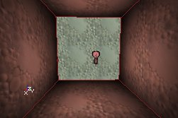